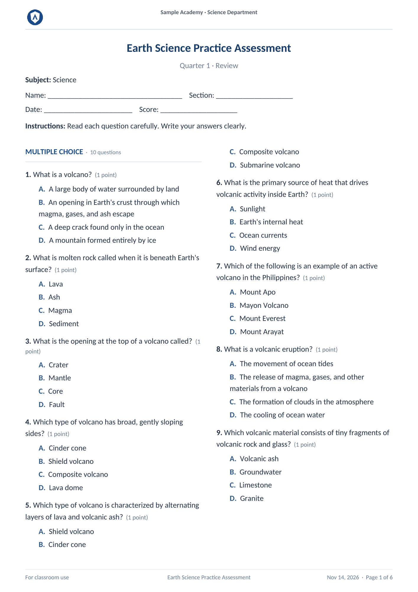
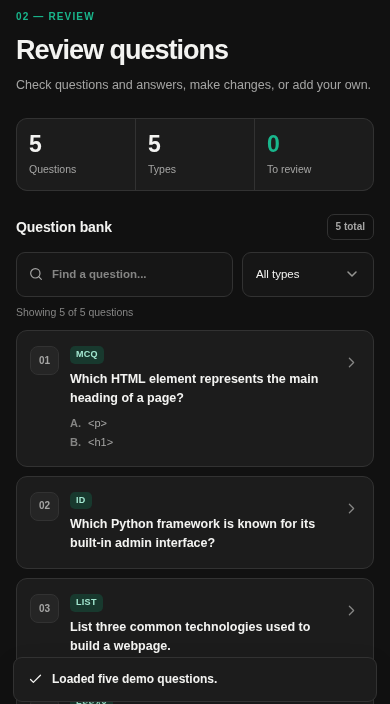
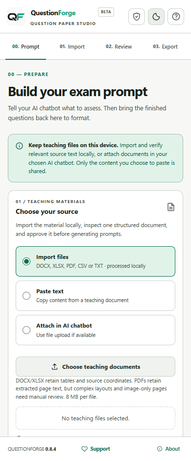
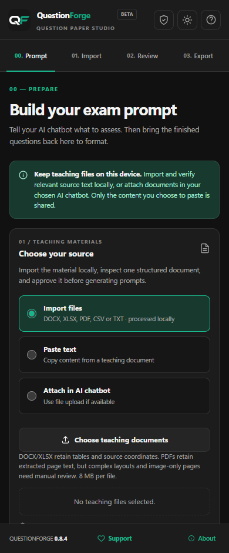

Questions in.
Paper out.
Turn questions from ChatGPT into a paper you can actually hand out. Check the answers, fix the formatting, and export to Word or PDF.


Start with
the lesson.
The exam should reflect what you taught. Bring a lesson plan, BOW, or TOS. QuestionForge helps you review the source and build a structured prompt for ChatGPT.


Bring the source. Keep the final say.
The details
still matter.
AI-generated questions need a human review. Check counts, types, wording, and answers—then see how they become a formatted document.

Make the paper
look like yours.
School heading, logo, page margins, custom text, answer keys, and one- or two-column layouts. A clean document doesn't have to mean another hour in Word.
Four steps.
No magic.
QuestionForge doesn't generate questions by itself. It helps you prepare, review, and publish them.
- 01
Bring the lesson
Import teaching materials or paste your own source text, then verify it.
- 02
Plan with ChatGPT
Copy the coverage and generation prompts into the same conversation.
- 03
Review the questions
Import structured JSON. Fix counts, answers, and question types.
- 04
Export the paper
Choose formatting, download Word, or print to PDF.
Your files aren't
our business.
Teaching files are processed locally. QuestionForge doesn't automatically upload them to an AI service. You decide what to copy into ChatGPT.
Locally saved drafts are optional and aren't encrypted by QuestionForge.
How privacy worksLess time fixing pages.
More time checking questions.
Developer preview for desktop Chrome. No QuestionForge account required.